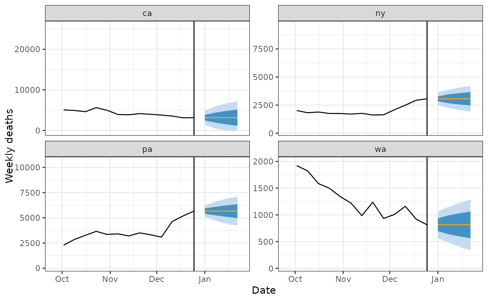

Predict the future with the most recent value
Source:R/cdc_baseline_forecaster.R
cdc_baseline_forecaster.RdThis is a simple forecasting model for epiprocess::epi_df data. It uses the most recent observation as the forecast for any future date, and produces intervals by shuffling the quantiles of the residuals of such a "flatline" forecast and incrementing these forward over all available training data.
Usage
cdc_baseline_forecaster(
epi_data,
outcome,
args_list = cdc_baseline_args_list()
)Arguments
- epi_data
- outcome
A scalar character for the column name we wish to predict.
- args_list
A list of additional arguments as created by the
cdc_baseline_args_list()constructor function.
Value
A data frame of point and interval forecasts for all aheads (unique
horizons) for each unique combination of key_vars.
Details
By default, the predictive intervals are computed separately for each
combination of geo_value in the epi_data argument.
This forecaster is meant to produce exactly the CDC Baseline used for COVID19ForecastHub
Examples
library(dplyr)
weekly_deaths <- case_death_rate_subset %>%
select(geo_value, time_value, death_rate) %>%
left_join(state_census %>% select(pop, abbr), by = c("geo_value" = "abbr")) %>%
mutate(deaths = pmax(death_rate / 1e5 * pop * 7, 0)) %>%
select(-pop, -death_rate) %>%
group_by(geo_value) %>%
epi_slide(~ sum(.$deaths), before = 6, new_col_name = "deaths") %>%
ungroup() %>%
filter(weekdays(time_value) == "Saturday")
cdc <- cdc_baseline_forecaster(weekly_deaths, "deaths")
preds <- pivot_quantiles_wider(cdc$predictions, .pred_distn)
if (require(ggplot2)) {
forecast_date <- unique(preds$forecast_date)
four_states <- c("ca", "pa", "wa", "ny")
preds %>%
filter(geo_value %in% four_states) %>%
ggplot(aes(target_date)) +
geom_ribbon(aes(ymin = `0.1`, ymax = `0.9`), fill = blues9[3]) +
geom_ribbon(aes(ymin = `0.25`, ymax = `0.75`), fill = blues9[6]) +
geom_line(aes(y = .pred), color = "orange") +
geom_line(
data = weekly_deaths %>% filter(geo_value %in% four_states),
aes(x = time_value, y = deaths)
) +
scale_x_date(limits = c(forecast_date - 90, forecast_date + 30)) +
labs(x = "Date", y = "Weekly deaths") +
facet_wrap(~geo_value, scales = "free_y") +
theme_bw() +
geom_vline(xintercept = forecast_date)
}
#> Loading required package: ggplot2
#>
#> Attaching package: ‘ggplot2’
#> The following object is masked from ‘package:epipredict’:
#>
#> layer
#> Warning: Removed 1 row containing missing values or values outside the scale range
#> (`geom_line()`).
#> Warning: Removed 39 rows containing missing values or values outside the scale range
#> (`geom_line()`).
